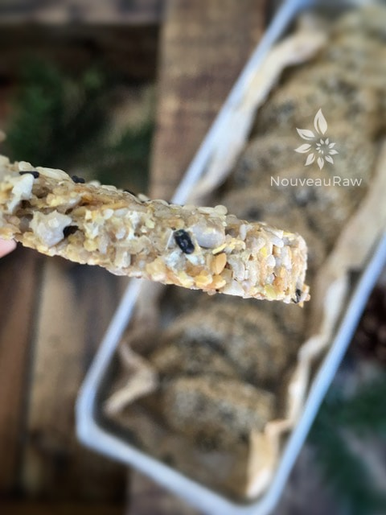

Black Sesame Cauliflower Crackers

~ raw, vegan, gluten-free, nut-free ~
Cauliflower? You bet you scratching your head on this one huh? I have used cauliflower as a rice substitute so why is it I never thought of using it in a cracker recipe?! I had to laugh because I ran to the store to pick us some cauliflower and when I arrived I headed straight for the produce department.
I spied the cauliflower, bagged it and put it in my cart, and continued my shopping. Then I realized that I had grabbed a purple cauliflower! lol I was so focused on just getting it that my brain didn’t even think about the color.
Besides the common white variety, cauliflower is occasionally found in green and a vibrant purple color that turns pale purple during cooking. Flavor-wise you would be fine using any color, visually, well it would sure make for an interesting looking cracker now wouldn’t it?! haha
Be sure to choose a firm, compact, heavy head with no signs of brown specks, which form as cauliflower ages. Store in a plastic bag with holes poked in it for up to two days. Wash cauliflower well just before using. Cut into florets by pulling away from the leaves and cutting around the core on the underside. Separate the florets by cutting them apart from the inside of the cauliflower. The green leaves at the base are edible but have a stronger flavor than the florets. Adding a tablespoon of lemon juice will help to retain the color.
Buckwheat, which is commonly found in raw food diet recipes, has a slightly deceptive name that can easily cause confusion. Buckwheat is not wheat, nor is it related to wheat. It is not a grain nor a cereal and is gluten-free. So where does it come from? Buckwheat is derived from the seeds of a flowering plant.
Buckwheat is a good binding agent, and when soaked becomes very gelatinous. Soaking, rinsing, and re-drying produces a crunchy buckwheat treat that can be eaten alone or added to other recipes. Buckwheat can be safely eaten by people who have celiac disease as it does not contain gluten. But be sure to know the source if you indeed have celiac. You want to make sure that the buckwheat isn’t contaminated in the processing plant. (see below) Buckwheat can be a good substitute for wheat, oats, r,ye and barley in a gluten-free diet.
Raw Buckwheat and Kasha – do you know the difference?
Toasted buckwheat is used to make traditional dishes in several different cultures. Generally, toasted buckwheat is referred to as kasha. If you are looking for raw buckwheat groats, you’ll want to avoid kasha. You can always tell by the color and the aroma. Kasha is a much darker reddish-brown color and has a strong nutty, toasted scent to it. Raw buckwheat groats are light brown or green and don’t have much of an aroma at all.
Yields 64 crackers (1 Tbsp cookie scoop)
- 4 cups cauliflower florets, chopped
- 1 cup buckwheat groats, soaked, drained, rinsed (see below) – expands to about 2 cups
- 1 tsp Himalayan pink salt
- 1 cup golden flax meal
- 1 Tbsp cold-pressed olive oil
- 1 Tbsp fresh lemon juice
- 1/2 cup water
- 3 Tbsp black sesame seeds
- 3 (additional) Tbsp black and white mixed sesame seeds – for topping
Preparation:
- Buckwheat Groats need to be soaked for about 60 minutes, drained, and rinsed. We are not taking them to the level of sprouting them with tails in this recipe.
- I have made this recipe several times and sunflower seeds can work as a substitute for buckwheat. Use the same measurement and soak them first.
- Place the cauliflower, buckwheat, salt, and ground flax in the food processor. Process long enough to break down all of the cauliflower and buckwheat.
- Add the olive oil, lemon, water, and sesame seeds. Process everything together.
- Using a 1 Tbsp cookie scoop, place the batter on the teflex sheet that comes with the dehydrator.
- Flatten each “ball” with an item that has a flat bottom (I used a beaker).
- Have a bowl of water set aside so you can dip your flattening tool in it between each flattening process. This way the cracker won’t stick.
- If the batter cracks a lot on the edges when you are pressing them flat, that is an indicator that the dough is a little too dry. Put it back in the food processor and add 1 Tbsp of water and test the batter again.
- Option: You can also just spread the batter out on the teflex sheet and score it into cracker shapes.
- Sprinkle extra sesame seeds on top and with a light hand, press down on each one just to embed the seeds.
- Transfer the crackers one by one to the mesh sheet.
- Dehydrate at 145 degrees (F) for 1 hour then reduce to 115 degrees (F) for two hours; flip and place on mesh screen with a 2nd screen on top to prevent curling; dehydrate for 5-6 more hours until crisp but not brittle.
Culinary Explanations:
- Why do I start the dehydrator at 145 degrees (F)? Click (here) to learn the reason behind this.
- When working with fresh ingredients it is important to taste test as you build a recipe. Learn why (here).
- Don’t own a dehydrator? Learn how to use your oven (here). I do however truly believe that it is a worthwhile investment. Click (here) to learn what I use.

Side view to understand the thickness of the cracker.
© AmieSue.com